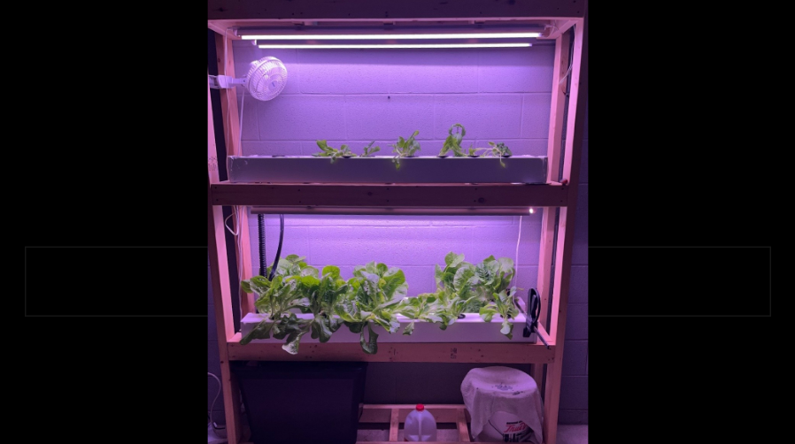

Project Overview
The goal of this project was to design, build, and test a fully functional indoor hydroponic system capable of year-round crop production for leafy greens. The system integrates fluid management, LED grow lighting, and engineering drawings with BOMs.
Engineering Process
System Design: Sized the reservoir, pump, and grow channels to support a continuous harvest cycle for lettuce. Designed a recirculating NFT (Nutrient Film Technique) layout to minimize water consumption while maximizing root oxygenation.
Fabrication: Built the structure with construction lumber, PVC channel, and food-safe HDPE reservoirs. Plumbing was designed for easy disassembly and cleaning between crop cycles. LED spectrum and timing were tuned experimentally against plant growth data.
Automation (In Progress): Developing an Arduino-based controller using pH and EC (electrical conductivity) sensors to monitor nutrient solution quality and trigger automated dosing pumps, replacing manual testing and adjustment.
Results
The baseline system achieved approximately 2× faster growth cycles and 4× yield per square foot for lettuce compared to traditional soil cultivation. Ongoing automation work targets nutrient control without daily manual intervention.


Key Takeaways
Working start to finish on a physical system from layout to harvest reinforced how early design decisions cascade into later fabrication and real outcomes. For example, having a central reservoir has made it possible for me to continue adding to the project with automated nutrient control. Additionally, I learned a lot about the sustainability of hydroponic systems, gaining a further appreciation for the intersection of sustainablility and engineering.
The project is ongoing. Next steps: close the pH control loop and run a fully automated crop cycle without any manual intervention.